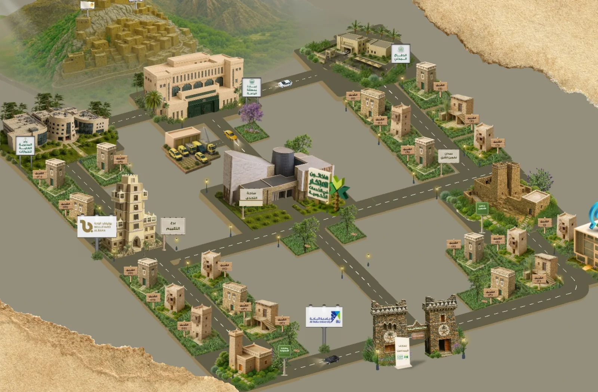
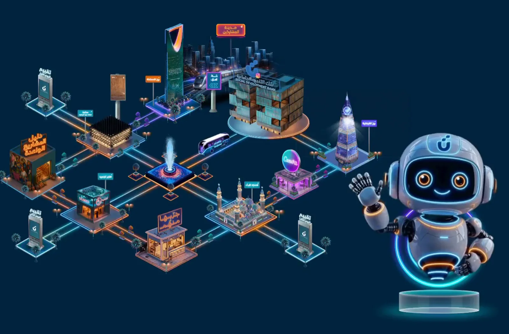
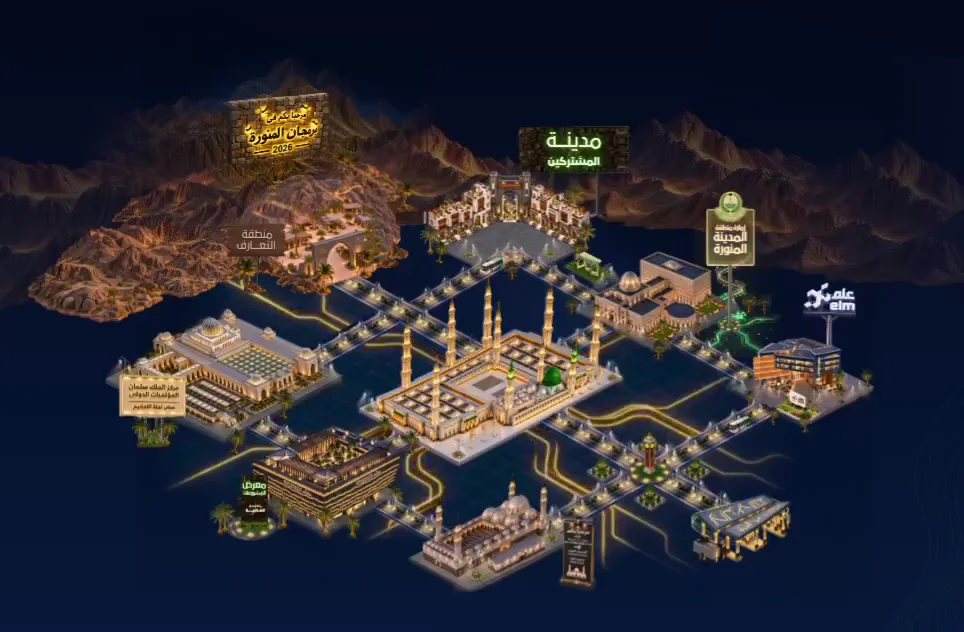

Beyond the Screen
Interactive Design
Transforming ideas into immersive digital experiences through interactive storytelling, creative exploration, and engaging visual journeys that invite people to participate, discover, and connect.
Selected Experiences
A selection of interactive projects that turn ideas into engaging, immersive digital worlds.
-

Rooted in Heritage An interactive map designed as an integrated learning environment for participants throughout the hackathon. -

Future in Motion An immersive digital experience designed to inspire innovative ideas and solutions that create positive social impact. -

The Magic of Munawara A digital city inspired by Madinah, guiding every team from first idea to final prototype.
Quick Quiz
Not sure what kind of interactive experience you need? Take a short quiz to discover what fits your goals best.
Take the Quiz